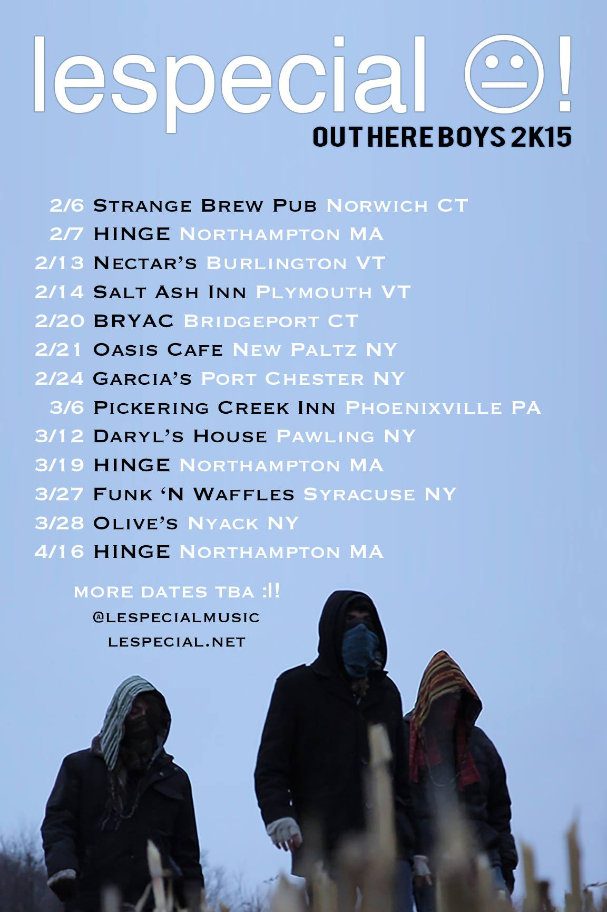

Viewing posts for the category Shows
Freddy Todd w/ WΦKE & Icculus Boston 9/21
Posted by: Alex Russo in Boston, Cambridge, Events, Freddy Todd, Glitch Hop, Icculus, Middle East, Shows, WΦKE 2 years, 1 month ago
Freddy Todd hits Middle East Upstairs tomorrow night with support from locals WΦKE & Icculus.
At this point Freddy Todd is OG in Glitch Hop/Bass Music communities - this is a great opportunity to catch him in a smaller room ...
Learson Peak @ ANNA Wednesday 8/29 (Free Show)
Posted by: Alex Russo in Allston, Bands, Free Events, Learson Peak, Live Music, Shows 2 years, 2 months ago
"A fixture in the Boston music community for over a decade, Stephen Learson embarks on a new creative journey with Learson Peak. Perhaps most known for being the singer, bassist, and keyboardist for The Indobox, he is a veteran with ...
Space Jesus b2b EPROM this Friday in Brooklyn
Posted by: Alex Russo in Brooklyn, EPROM, Glitch Hop, Huxley Anne, Jaenga, Live Music, New York, Shows, Space Jesus, Tiedye Ky 2 years, 2 months ago
Space Jesus and EPROM head to BKNY for a special tag set after Electric Zoo gets out this Friday night. Support by Huxley Anne, Jaenga, and Tiedye Ky at Brooklyn's Avant Gardner. Tickets are moving fast - Tier 1 and ...
Astronaut School Tour - Space Jesus, Freddy Todd, and more!
Posted by: Alex Russo in Esseks, Freddy Todd, Schlang, Shows, Space Jesus, Supersillyus 5 years, 9 months ago
I'll keep this one short and sweet. Astronaut School Tour featuring Freddy Todd and Space Jesus hits Portland, Maine tonight, and Boston on Saturday, and both nights will feature art from The Welch Brothers. These are must see shows ...
lespecial! Out Here Boys 2015 tour!
Posted by: Alex Russo in Shows, lespecial 5 years, 9 months ago

lespecial! have just announced their first round of Winter/Spring tour dates and they'll be kicking it all off at the headiest spot in Norwich, CT, Strange Brew Pub! Also included on the tour are stops at Hinge in ...
Recent Posts
- Freddy Todd w/ WΦKE & Icculus Boston 9/21
- Together Boston Kicks Off This Sunday 9/23
- Project MUM Somerville Outdoor Party 9/22 FREE
- Learson Peak @ ANNA Wednesday 8/29 (Free Show)
- Space Jesus b2b EPROM this Friday in Brooklyn
Archive
2018
2015
2014
Categories
- Albums (2)
- Allston (1)
- BBP (2)
- Bands (1)
- Blue Boy Productions (4)
- Boston (1)
- Brooklyn (1)
- Cambridge (1)
- Chillout (1)
- DJ Anya (1)
- Drum and Bass (1)
- EPROM (1)
- EarthCry (1)
- Esseks (1)
- Events (6)
- Freddy Todd (1)
- Freddy Todd (1)
- Free Events (2)
- Free downloads (2)
- Glitch Hop (2)
- Glitch Hop (2)
- Grateful Dead (1)
- Huxley Anne (1)
- Icculus (1)
- Jaenga (1)
- Learson Peak (1)
- Live Music (2)
- Live Recording (1)
- Middle East (1)
- Mixes (3)
- New Music (2)
- New York (1)
- Original Tracks (5)
- Outdoors (1)
- Particle (1)
- Remixes (1)
- Schlang (1)
- Shows (7)
- Space Jesus (4)
- Supersillyus (1)
- The Mad Mauritian (2)
- Tiedye Ky (1)
- Trap (1)
- Unreleased Music (1)
- Video (1)
- WΦKE (1)
- desert dwellers (1)
- lespecial (2)
Authors
- Polar Vortex (12)
- Alex Russo (16)
- Alex Russo (6)
Feeds
RSS / AtomSubscribe to our Newsletter
Connect